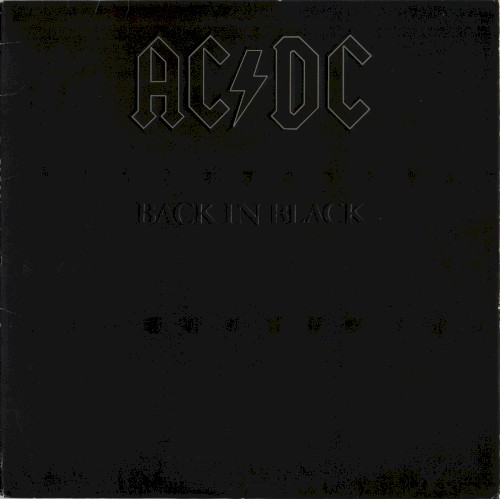
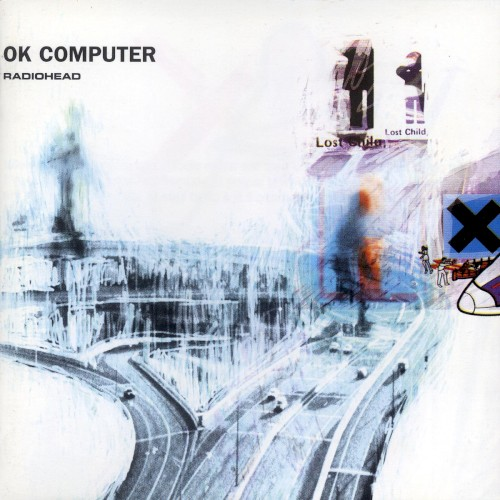

Hello, and welcome to the cabinet. I have been buying records since the eighties — vinyl first, then cassette, then mostly CD, plus the occasional import when I could track one down. This page is just a personal account of what's actually on the shelf. Nothing here is for sale, and the six records below aren't ranked against each other or anything else — they're simply the ones I've properly written up so far, in the order they went up on this site.
MY RECORD COLLECTION
-

-
